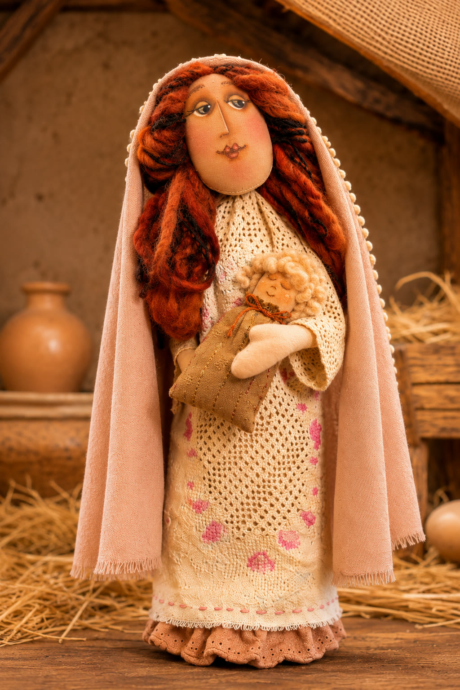
Projeto 01
Maria
Rosto pintado à mão, cabelos construídos com fios, vestimenta e manto.
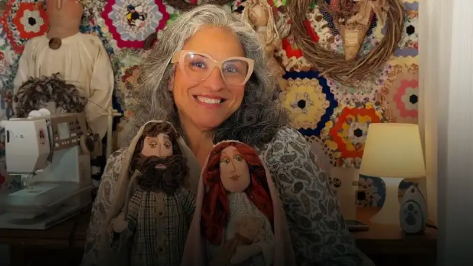
Workshop Tissu Studio
Uma criação artesanal cheia de significado, delicadeza e tradição.
Disponível a partir de 08/11, às 18h
10x de R$ 8,05
ou R$ 67 à vista
Workshop Sagrada Família
Imagine transformar tecidos, fios, tintas e pequenos detalhes em uma peça que carrega história, afeto e beleza.
Neste workshop, você aprenderá a confeccionar a Sagrada Família utilizando técnicas artesanais inspiradas no estilo Country Primitivo.
Da construção dos moldes à costura, da modelagem dos rostos à pintura das expressões, cada etapa será apresentada cuidadosamente para que você compreenda como dar forma, personalidade e identidade a cada personagem.
Três projetos em um workshop
Os três serão construídos artesanalmente, respeitando as características de uma estética rústica, com formas orgânicas, detalhes delicados e a beleza singular das peças feitas à mão.

Projeto 01
Rosto pintado à mão, cabelos construídos com fios, vestimenta e manto.
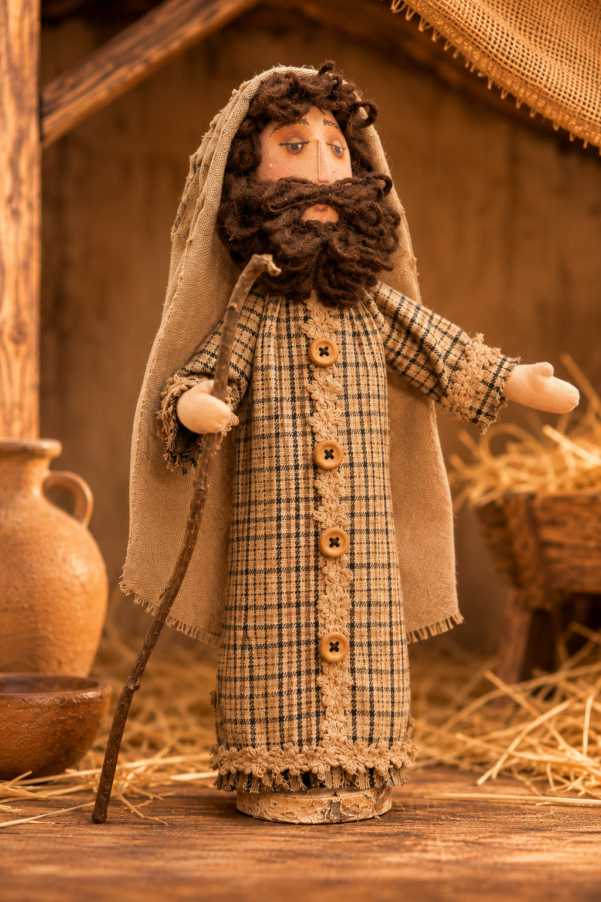
Projeto 02
Barba e cabelos com fios, túnica, manto e cajado.
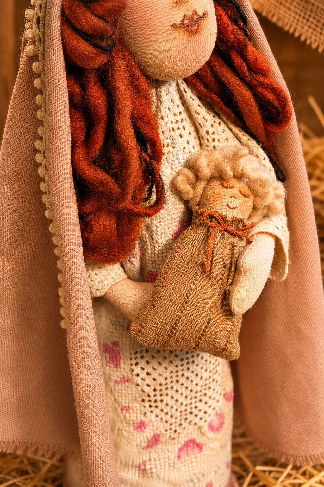
Projeto 03
A menor peça da composição, nos braços de Maria.
Programa
5 módulos, dos moldes à montagem final, para construir os três personagens.
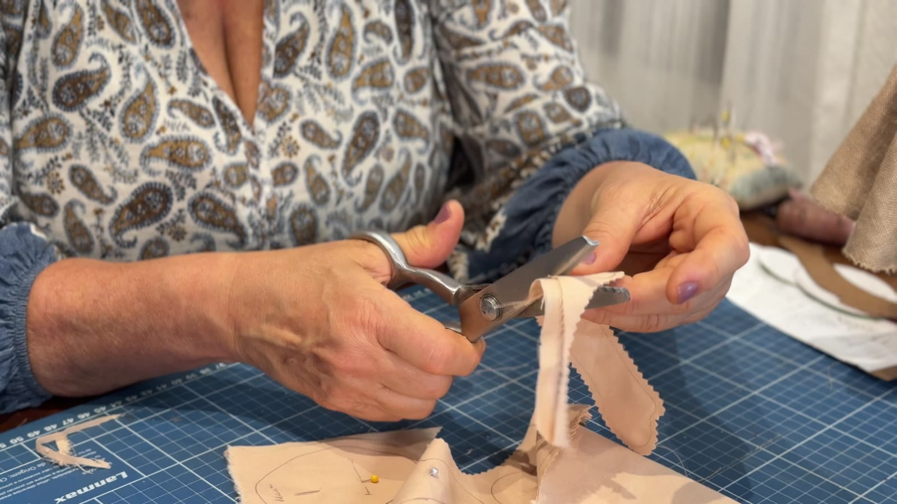
Módulo 1
Apresentação dos personagens, materiais, moldes e corte.
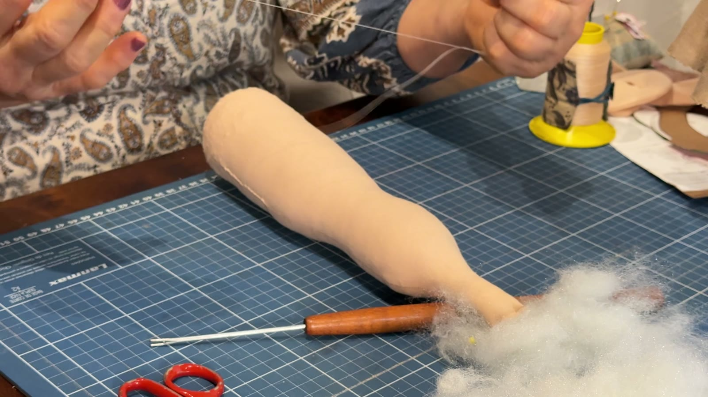
Módulo 2
Montagem, enchimento e modelagem dos corpos.
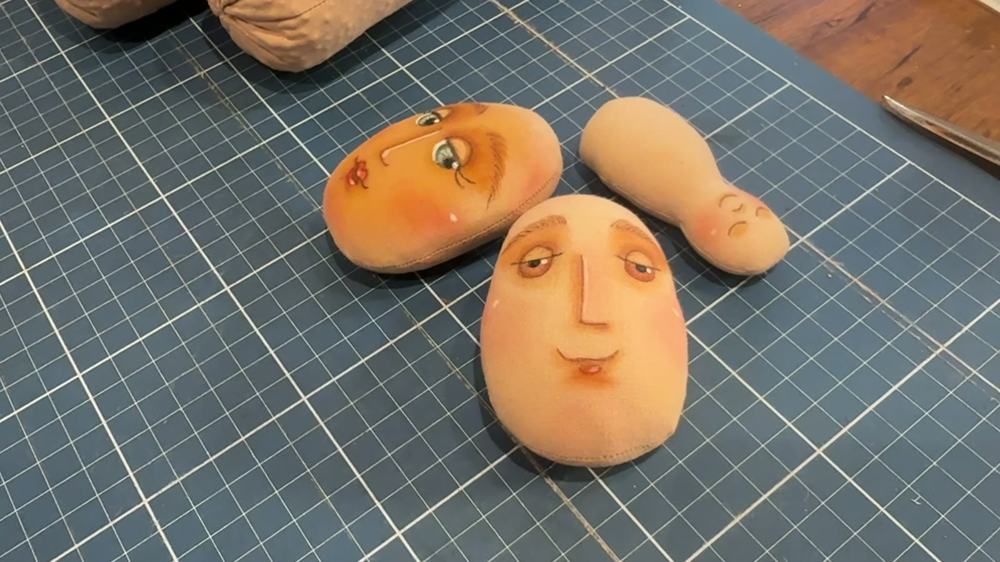
Módulo 3
Construção das expressões, pintura e detalhes faciais.
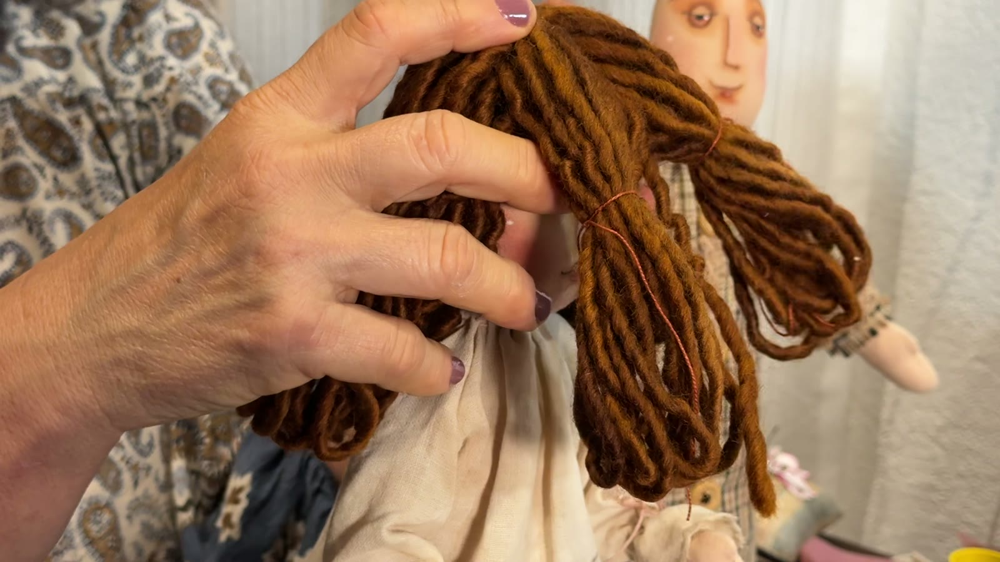
Módulo 4
Cabelos, barba, túnicas, mantos e elementos decorativos.
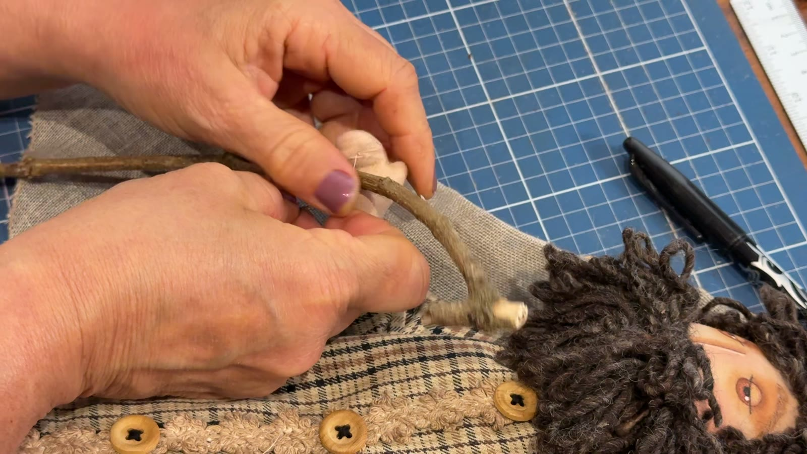
Módulo 5
Integração dos personagens, acabamentos e composição da peça.
Nos bastidores
Registros reais do atelier. Do corpo de tecido ao último botão da túnica.
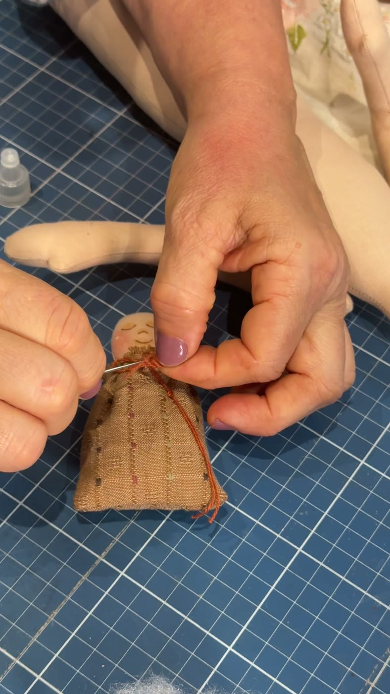
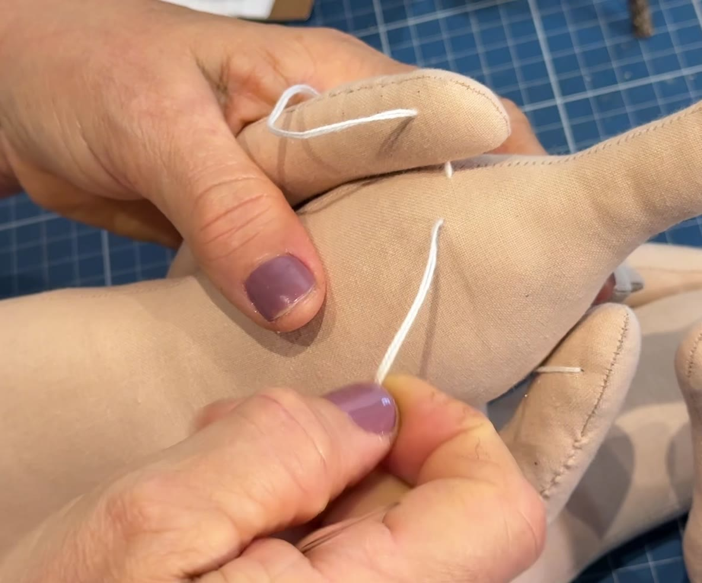
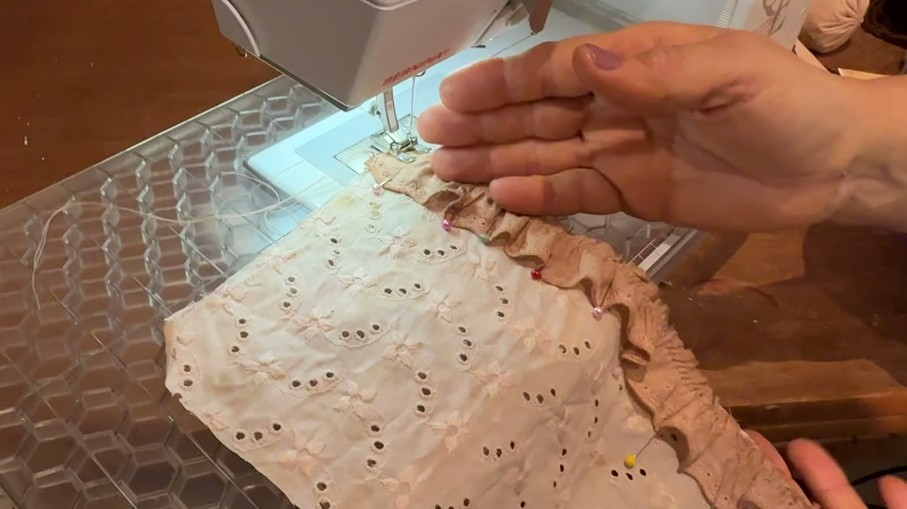
Técnica e repertório
Estruturar as peças e trabalhar os volumes.
Construir os cabelos e as barbas com fios.
Confeccionar as vestimentas e explorar diferentes texturas.
Realizar os acabamentos que tornam essa composição tão especial.
Um encontro com a criatividade, a tradição e a arte de transformar materiais simples em algo extraordinário.
Venha descobrir o prazer de criar com as próprias mãos e produzir uma peça que poderá atravessar gerações.
Por 10x de R$ 8,05
Do tecido à personagem.
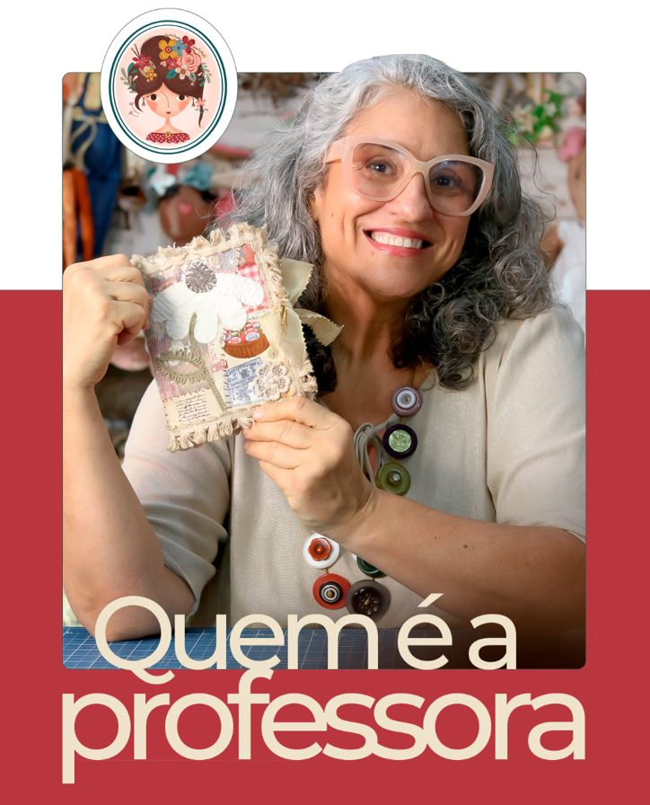
Quem é a professora
Valeska Fraga
Desde menina, Valeska Fraga vive, respira e sonha com artesanato.
A criatividade sempre esteve presente em sua trajetória, acompanhada pela vontade de transformar materiais simples em objetos carregados de significado, personalidade e beleza.
Autodidata por necessidade, buscou conhecimento e técnicas avançadas, encontrando nos Estados Unidos um importante espaço de aprendizado e aprofundamento.
Foi nesse caminho que seu olhar encontrou uma linguagem com a qual se identificou profundamente: o Country Primitivo.
Essa estética passou a influenciar suas criações e permanece presente em seu trabalho, especialmente nas bonecas de pano, que se tornaram uma de suas grandes paixões.
Hoje, Valeska compartilha esse repertório por meio do Tissu Studio, criando projetos que unem técnica, matéria, memória e identidade.
By Valeska Fraga
Tecidos, fios e tintas. História, afeto e beleza. Uma peça para atravessar gerações.
Um projeto de assinatura Tissu Studio.
Country Primitivo
O Country Primitivo é uma das referências que atravessam o trabalho de Valeska.
A linguagem valoriza o feito à mão, os materiais, as texturas, os objetos com aparência de memória e a personalidade das peças.
Na Sagrada Família, essa referência aparece nas formas orgânicas, nos detalhes delicados e na beleza singular de cada personagem.
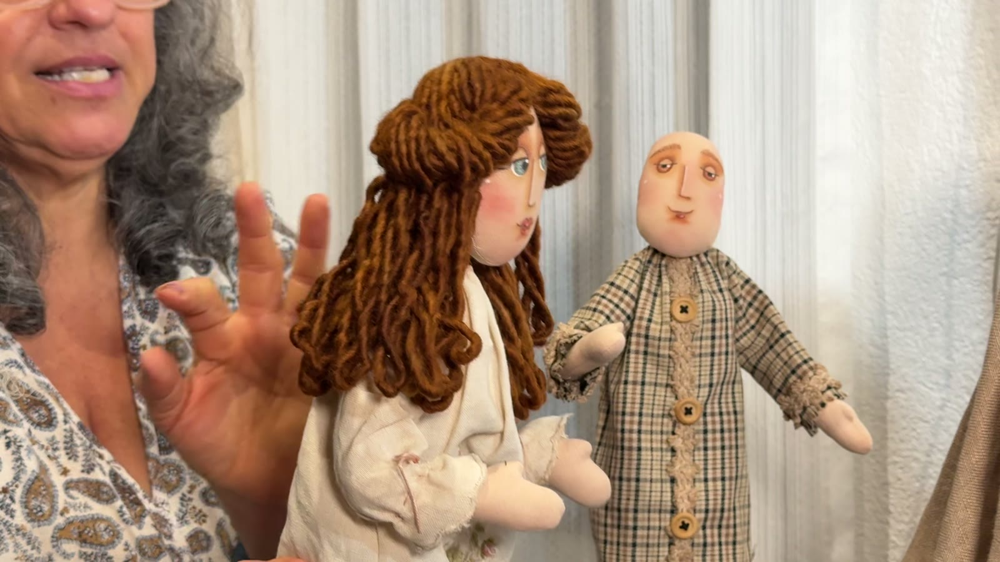
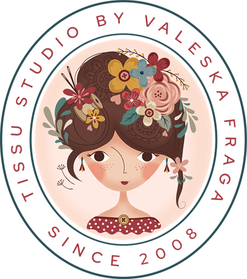
Dos moldes à montagem final, aprenda a construir Maria, José e o Menino Jesus.
Disponível a partir de 08/11, às 18h
10x de R$ 8,05
ou R$ 67 à vista
Cada personagem ganha personalidade nos detalhes.
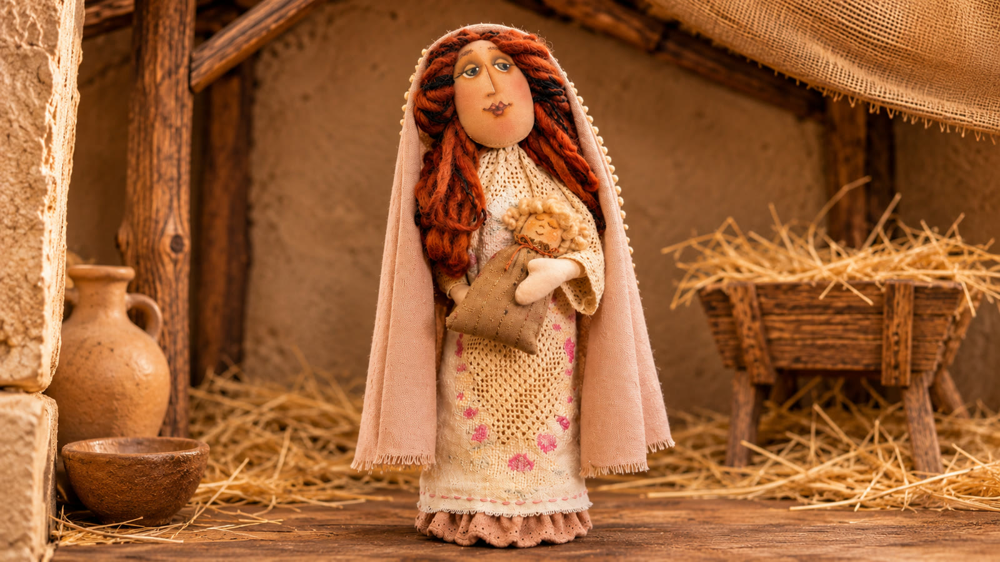
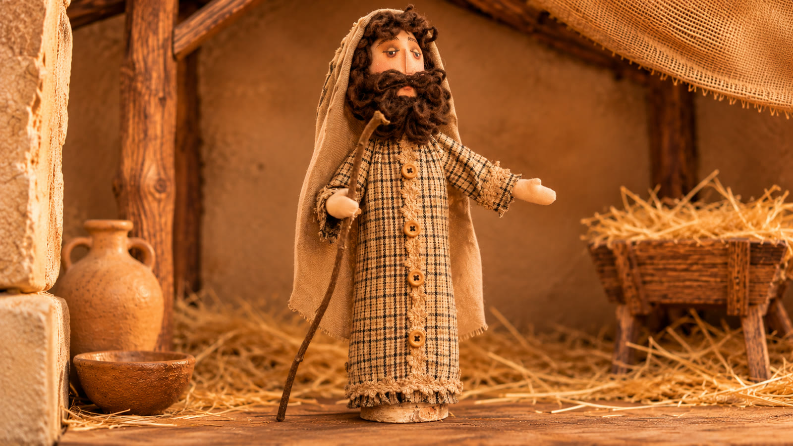
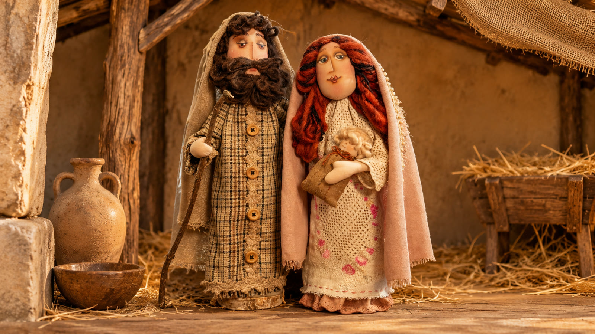
Material de apoio
Você não acompanha apenas as aulas.
O workshop inclui o molde e a lista de materiais, para você se preparar e construir os três personagens.
Um projeto completo para aprender, construir e criar com as próprias mãos.
Quero aprenderSobre o Tissu Studio
O Tissu Studio reúne o universo criativo desenvolvido por Valeska Fraga em torno da costura criativa e das possibilidades do feito à mão.
A marca nasce do encontro entre técnica, repertório, materiais e paixão pelo artesanato.
Seus projetos exploram tecidos, fios, rendas, botões, flores, estampas e elementos que fazem parte do universo da criação artesanal.
Mais do que ensinar uma peça, o Studio compartilha processos e amplia possibilidades.
Cada projeto carrega uma linguagem própria.
Depoimentos
Palavras de alunas e de quem acompanha o Tissu Studio nos cursos, nas aulas presenciais e no YouTube.
Dúvidas
Os três: Maria, José e o Menino Jesus.
O workshop fica disponível a partir de 08/11, às 18h.
10x de R$ 8,05 ou R$ 67 à vista.
Sim. O workshop acompanha o molde e a lista de materiais.
Em cinco módulos: moldes e preparação, estrutura e costura, rostos e pintura, vestimentas e cabelos, e montagem final.
As técnicas artesanais são inspiradas no estilo Country Primitivo, com uma estética rústica, formas orgânicas e detalhes delicados.